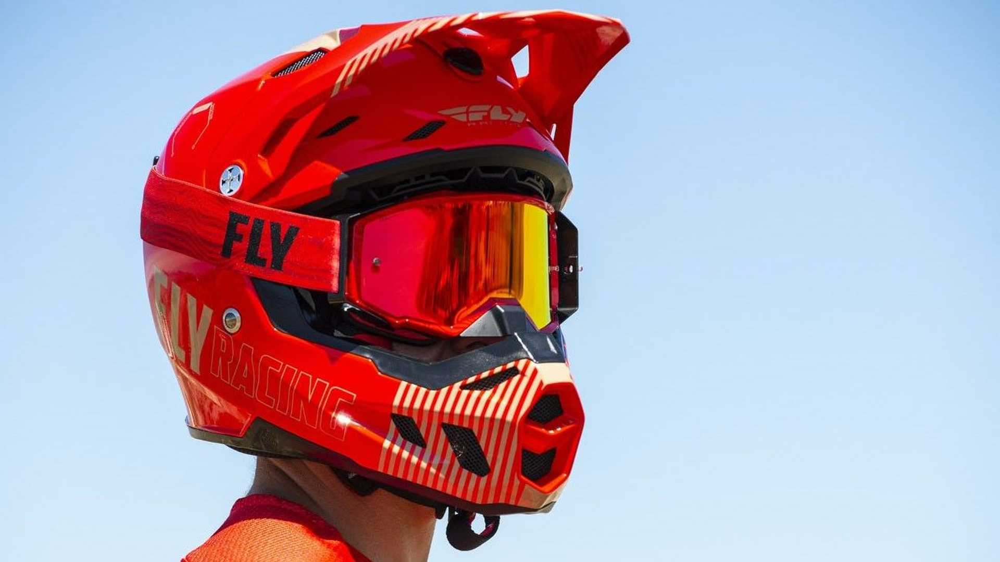
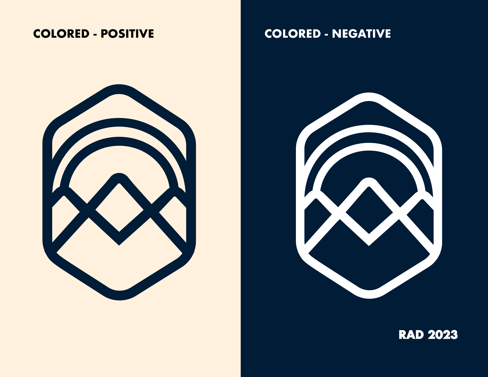
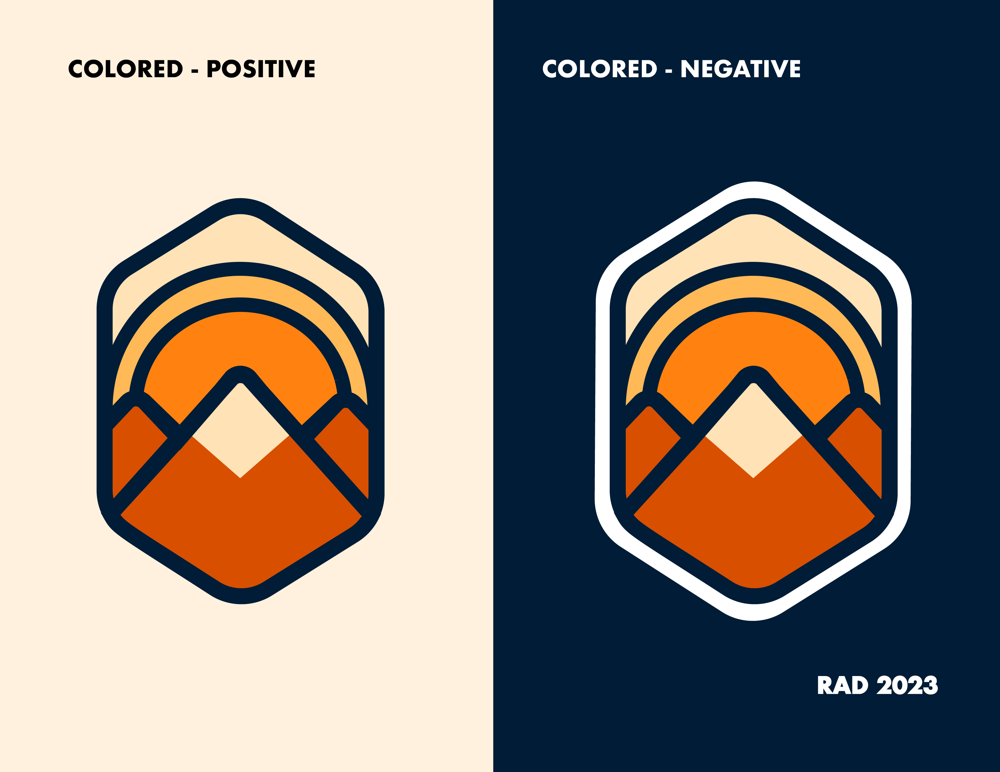
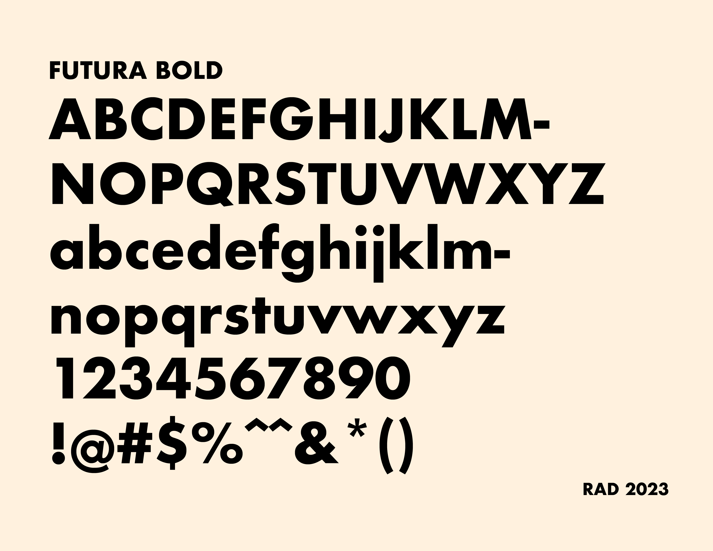
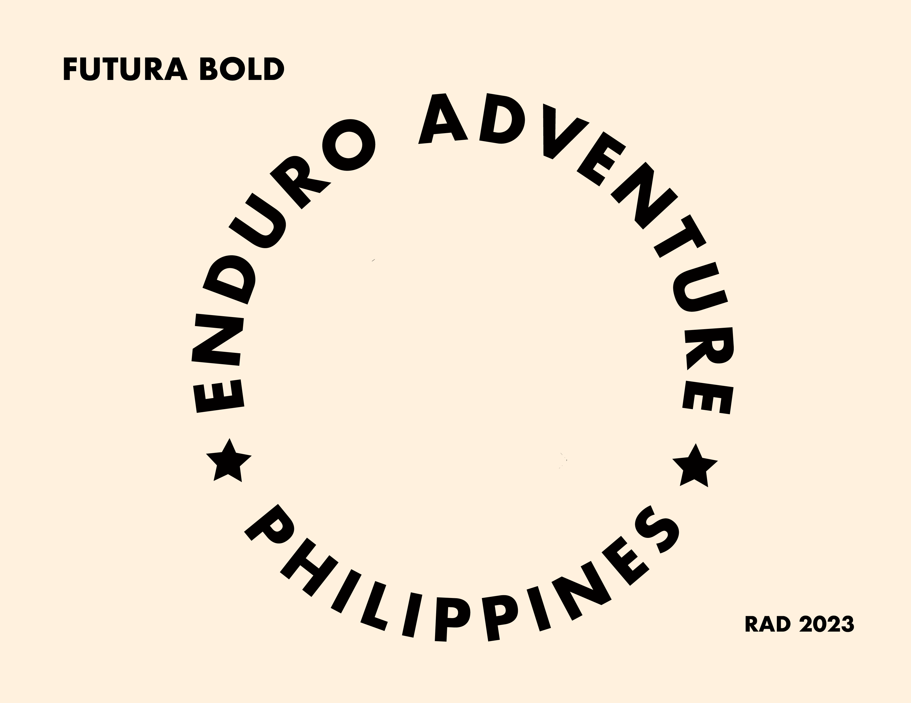
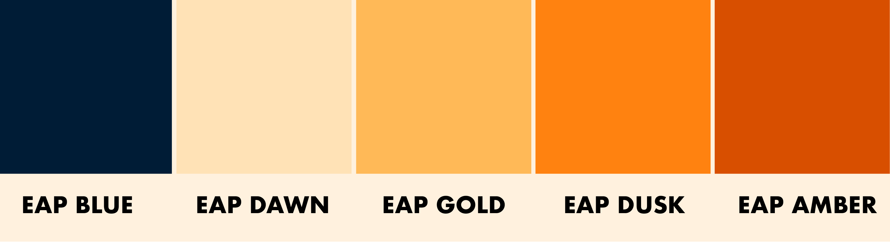

Concept - Cross the Sunset
When coming up with an mark, there are things that we consider:
- Simple - The mark should be able to be drawn on a napkin
- Distinct - The mark should be discernible
- Appropriate - The mark should relevant to the industry that the organisation is for.
Ofcourse all these should come together and convey the brand’s (or perhaps the founder’s) personality and message.

Brand Message: Approachable Authority
After our initial call, there were a few words that were constantly popping up, in that the instructors didn’t take themselves too seriously despite the fact that they were top of their class.

Enduro Biking takes a lot of technical skill to learn, but while so, the main crux of it is to enjoy the ride.
We wouldn’t go as far to say it’s “fun” —but it is enjoyable.
And that’s what the EAP team imagines this brand to be, enjoyable at the same time empower you to have the skillset to maximize your machine.
EAP while being a team of highly competent instructors, want to instill an environment that’s casual and relaxed.
It’s already difficult to weld a huge machine between your legs and it’s only right to have instructors that will guide you but also let you explore and figure things out for yourself.

When you sign up for a course on EAP you’re not just signing up for a class, you’re signing in to a new set of friends.
Logomark
Our logomark is based on mountain trenches and the outdoors. We wanted to create something less edgy, less in-your-face, and more steady, casual but at the same time, firm.
We ride until the sun goes down —or until the sunrises.
The scenery also forms a helmet that is most often used when riding enduro bikes.
The mark can stand on its own —as seen but can also be paired with the Futura Bold (our typeface of choice)
 Typography
Typography is an important component in establishing how we present our brand to the public. If the mark is the face of the company then, typography is its voice.
We chose Futura Bold as our main typeface for the mark because it’s a worker’s typeface. 
The sharp edges and rounded bowls of the R and O evoke friendliness without being a push over.
It’s easy to read, and works well in smaller sizes because of the strong silhouette of the letterforms.
It’s robust, just like our bikes, and moreso our instructors.
And it ties in well with our sturdy mark.
Color Scheme
The mark is our face.
The typeface is our voice.
The colors are our clothes.
Correspondence with the founders were firm that they wanted to drive the point that this is a Filipino-owned and run organization, now how can we depcit that without appearing too Filipino-flag-ey.
We take inspiration from outdoor brands like Patagnonia and Northface and peruse a slightly varied saturation of Red, Blue and Yellow.
Conclusion
Tying everything together, we have a mark encompasses ‘Approachable Authority’.
As mentioned earlier, a strong mark should have 3 things
- Simple — our mark is simple enough that it works with our without color, There’s no need to think about what it means because it’s right there.
- Distinct — Unlike most brands under this category, we take a more calmer take and less rugged but at the same time we still show our sporty side
- Appropriate — The mark is very much sporty but also is inclusive.